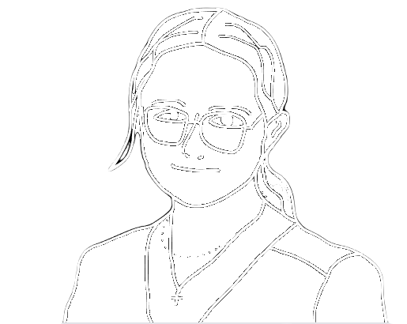
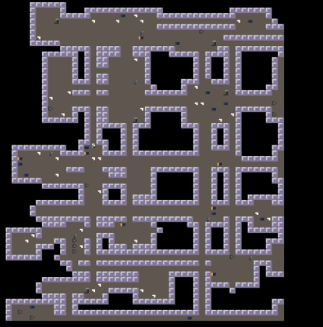

Léa Cortet
Qui suis-je ?
Je suis actuellement étudiante à l'IUT de Nantes en première année de BUT informatique. J'aime bien sortir de chez moi de tant à autre afin de passer du temps mes amis, mais sinon je me contente de jouer aux jeux-vidéos, de peindre ou encore de faire de l'escalade.
Je suis une fan absolue de l'univers Cyberpunk que je trouve absolument magnifique. Mon jeu de prédilection est donc bien entendu Cyberpunk 2077. Mais j'apprécie aussi énormément les FPS comme Valorant et j'aime également découvrir de nouveaux jeux.
Une future Corporate dans le monde de l'Informatique ?
Je suis un peu perdue sur ce que j'aimerai faire plus tard, mais travailler dans le monde de l'informatique me paraît comme une évidence. Concernant le domaine, c'est là que ça se complique. J'ai toujours beaucoup aimé la créativité et le design et ce n'est pas une chose simple de l'associer à de l'informatique purement pratique.
M'affirmer dans le monde de l'Informatique en tant que femme est selon moi un challenge pas forcément évident. On peut se sentir un peu seule parfois, et la mixité est quelque chose d'important selon moi. J'espère donc que dans le futur plus de femmes se lanceront dans ce domaine.
Quelques projets de ma création
Projet Quadtree
Ce projet a été réalisé avec la collaboration de Sacha Chauvel, dans le cadre de la ressource R1.01 et de la SAÉ implémentation d'un besoin client SAE1.01. Le but de ce projet était de créer un mini jeu en vue de les associer avec un arbre de donnée "quadtree" pour sotcker la carte du jeu.
Ce projet a été pour moi mon premier gros projet que ce soit en terme de quantité de code ou bien de complexité algorithmique, cela m'a notament poussé à apprendre à mieux utiliser git, que ce soit pour retourner en arrière sur d'anciens commits, mais aussi pour un meilleur travail d'équipe. Le projet est d'ailleur disponible sur le github de Sacha bien qu'il est été majoritairement developper dans un repositry gitlab privé.
Nous avons bien entendu implémenté certaine des extention demandé comme les portails ou la sauvegarde du monde, mais nous nous somme permis quelques extra quand à la consigne de la génération aléatoire, en effet au lieu de simplement choisir aléatoirement la valeur des tuiles, j'ai choisi de coder un algorithme de génération procedural de donjon.
L'algorithme que j'ai choisi reste assez simple puisque c'est un algorithme basé sur un arbre binaire nommé arbre BSP (Binary Space Partition). J'ai utilisé le site roguebasin comme documentation pour l'implementation de cet algorithme.
Projet Flask
J'ai décidé de créer une To-Do List interactive. Mon objectif était d'avoir une base de données manipulable via une page web, avec la possibilité de faire au moins une mise à jour dans la base de données (par un UPDATE ou un INSERT).
Pour commencer, j'ai installé FLASK et les outils nécessaires à la gestion des bases de données en Python. J'ai ensuite créé une base de données SQLite à l'aide du module SQLite3 de Python, qui a été intégré dans mon application FLASK. J'ai ensuite créé une vue pour permettre aux utilisateurs de supprimer des tâches de la base de données. Ensuite, j'ai créé une page web pour afficher les tâches.. J'ai ajouté deux formulaires pour permettre aux utilisateurs d'ajouter de nouvelles tâches et d'en supprimer.
Il y a quelques particularités au niveau du projet. Par exemple, j'ai rencontré des difficultés à communiquer avec le serveur dans un premier temps puis j'ai du apprendre à créer un formulaire où un champ était déjà rempli. (L’ID de la tâche à supprimer) J'ai dû utilisé un input caché. Il a fallu éviter les pièges petit à petit.
Projet Folium / CSV
J'ai choisi d'utiliser la bibliothèque folium afin d'exploiter les données d'un fichier CSV sous forme de carte. Le fichier CSV recense tous les lycées de Bretagne avec les informations qui leurs correspondent tels que leurs noms, leurs adresses exactes, si le lycée est public ou privé, etc. J'ai commencé par traduire le fichier CSV en une liste de dictionnaires. J'ai ensuite exploité les données grâce aux commandes folium nous permettant de créer et de placer des points sur une carte.
J'ai ensuite réalisé une page Web afin de rendre le projet dans le cadre de mon année de Première NSI. J'ai complété mes connaissances en Web que je venais de découvrir en début d'année. Je me suis beaucoup amusé à trouver des ressources pour proposer un design original et une palette de couleurs qui correspondrait au fond de ma page qui est quelque peu original.
C'était par ailleurs un de mes premiers où j'ai été amené à collaborer avec une équipe pour une réalisation. Nous étions une équipe composé uniquement de filles et cela était d'autant plus appréciable que la situation est rare. Lénaïc m'a été d'une grande aide pour la réalisation du code en python et Léa a su amené des idées originales. Merci encore à elles.
Mention spéciale à mon univers adoré
Voici une galerie photo afin que vous puissiez vous aussi apprécier ces merveilles visuelles.
GameBoy RPG
Je n'ai jamais vraiment fini ce projet, et bien que je compte me ré-attaqué au game dev retro (que ce soit sur GameBoy ou GameBoy Advence), je pense que je ne retoucherais pas à ce projet.
Bien qu'il ai était très plaisant d'apprendre à compiler pour la GameBoy, les outils et la documentation ont eux beacoup viellis, rendant le processus de création de sprite et tile-map très long et peu pratique. Le manque de documentation du GameBoy devkit a achever ma motivation.

Le projet reste tout de même disponible sur ma page github à titre historique.